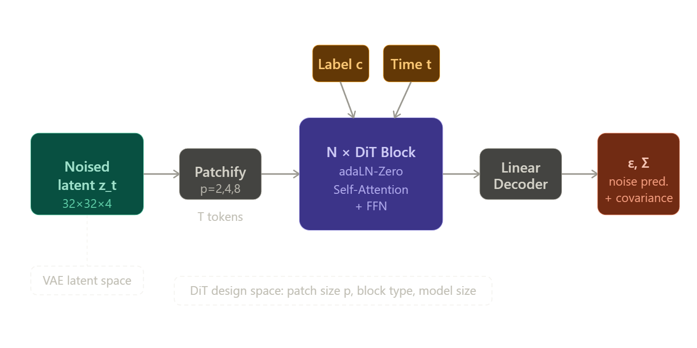
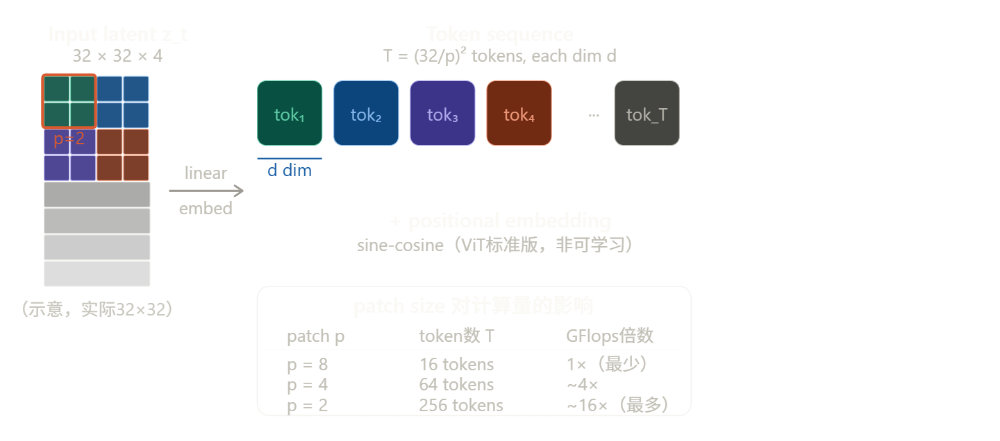
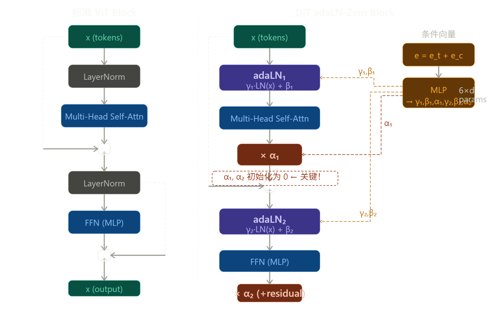
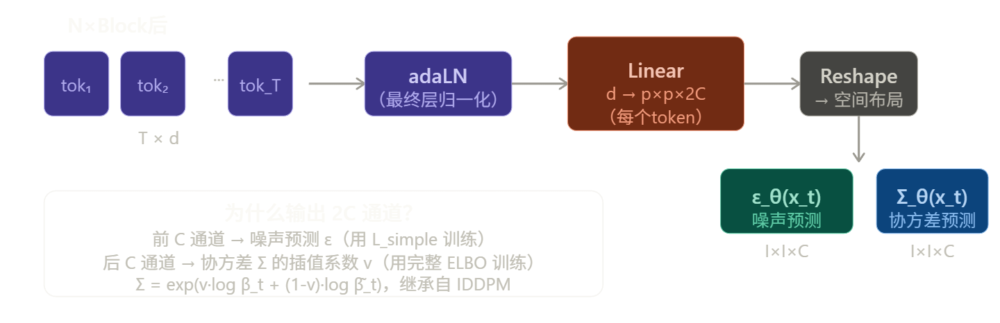
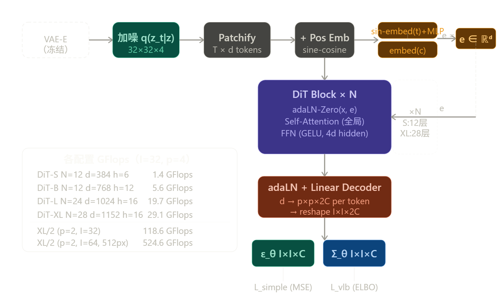
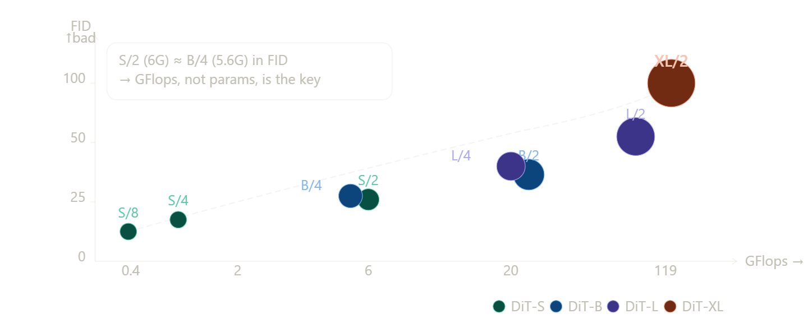

DiT
核心问题与动机
在 DiT 之前，扩散模型（DDPM）的骨干网络几乎清一色是卷积 U-Net。Transformer 在 NLP（GPT、BERT）和视觉识别（ViT）领域已经展现出卓越的 scalability，但在扩散生成模型中却几乎缺席。
本文要回答的问题很简单：能不能用纯 Transformer 替代 U-Net 来做扩散模型？如果能，它能 scale 吗？
先来看整体架构：

前置知识
① DDPM 扩散过程
前向过程加噪：\(q(x_t|x_0) = \mathcal{N}(x_t;\sqrt{\bar\alpha_t}x_0, (1-\bar\alpha_t)I)\)，通过重参数化 \(x_t = \sqrt{\bar\alpha_t}x_0 + \sqrt{1-\bar\alpha_t}\epsilon_t\)。
反向过程去噪：神经网络学习 \(p_\theta(x_{t-1}|x_t) = \mathcal{N}(\mu_\theta(x_t), \Sigma_\theta(x_t))\)，训练损失为预测噪声的 MSE：\(\mathcal{L}_{simple} = ||\epsilon_\theta(x_t) - \epsilon_t||_2^2\)。协方差 \(\Sigma_\theta\) 用完整 ELBO 训练（Nichol & Dhariwal 方法）。
② Classifier-Free Guidance（CFG）
条件生成时，引导采样：\(\hat\epsilon_\theta(x_t, c) = \epsilon_\theta(x_t, \emptyset) + s \cdot (\epsilon_\theta(x_t, c) - \epsilon_\theta(x_t, \emptyset))\)，\(s>1\) 增强条件相关性，训练时随机丢弃 \(c\) 替换为 null embedding \(\emptyset\)。DiT 实验中 CFG scale 取 1.25 和 1.5。
③ Latent Diffusion Model（LDM）
先用 VAE 编码器 \(E\) 压缩图像 → 在 latent 空间跑扩散 → VAE 解码器 \(D\) 还原。DiT 使用 Stable Diffusion 的预训练 VAE，下采样因子为 8，256×256×3 的图像变为 32×32×4 的 latent。这大幅降低扩散模型的计算成本。
架构拆解
整个前向过程分为四个阶段：Patchify → DiT Blocks → Unpatchify（Linear Decoder），条件信号通过 adaLN-Zero 注入每个 Block。
Patchify

具体操作：输入 latent \(z_t \in \mathbb{R}^{I \times I \times C}\)（对于 256×256 图像，\(I=32, C=4\)），用一个步长为 \(p\) 的线性投影层（等价于 kernel=\(p\), stride=\(p\) 的卷积）将每个 \(p \times p \times C\) 的 patch 映射为 \(d\) 维向量，得到序列 \(\mathbf{x} \in \mathbb{R}^{T \times d}\)，其中 \(T = (I/p)^2\)。
为什么用 sine-cosine 而非可学习位置编码：可迁移到不同分辨率（512×512 时 \(T\) 变为 4 倍），不需要重新训练位置编码。
条件信号的准备
在进入 Block 之前，需要把两路条件信号——时间步 \(t\) 和类别标签 \(c\)——嵌入成向量。
时间步 \(t\) 的嵌入：与 DDPM 一致，用正弦频率嵌入（sinusoidal embedding）将标量 \(t \in [0, 1000]\) 编码为向量，再过两层 MLP 得到 \(\mathbf{e}_t \in \mathbb{R}^d\)。
类别标签 \(c\) 的嵌入：标准可学习的 embedding table，\(\mathbf{e}*c \in \mathbb{R}^d\)。CFG 训练时有概率把 \(c\) 替换为 null token，对应学习一个 \(\mathbf{e}*\emptyset\)。
两路信号直接相加：\(\mathbf{e} = \mathbf{e}_t + \mathbf{e}_c\)，这个求和向量 \(\mathbf{e}\) 作为 adaLN 的唯一输入。
DiT Block
这是整个论文最重要的部分。先看标准 ViT Block 的结构，再看 DiT 做了什么改动。

完整的数学表达，一个 DiT Block 的前向过程写出来是：
其中 \(\gamma_1, \beta_1, \alpha_1, \gamma_2, \beta_2, \alpha_2 \in \mathbb{R}^d\) 全部由同一个 MLP 从条件向量 \(\mathbf{e}\) 回归得出，每个 Block 有自己独立的 MLP，共 6 组参数，每组维度为 \(d\)。
adaLN 与标准 LayerNorm 的区别：标准 LN 学习固定的 \(\gamma, \beta\)（对所有样本相同）；adaLN 的 \(\gamma, \beta\) 是由条件信号 \(\mathbf{e}\) 动态生成的，因此不同时间步、不同类别会得到不同的缩放和偏移。
为什么 \(\alpha\) 初始化为零是关键：训练开始时，\(\alpha = 0\) 意味着残差分支输出为零，整个 Block 退化为恒等映射 \(\mathbf{x} \leftarrow \mathbf{x}\)。这等价于一开始网络"什么都不做"，梯度从输出可以无阻碍地流到输入，避免了深网络初期的不稳定。随着训练进行，\(\alpha\) 逐渐从零增大，Block 才开始贡献变换。这个技巧来自 Goyal et al. 2017 对 ResNet 大规模训练的研究，在 DiT 里是训练稳定性的核心保障——作者提到训练全程没有出现 loss spike。
Self-Attention 内部细节
DiT 用的是标准 Multi-Head Self-Attention，没有任何修改：
\(\mathbf{Q}, \mathbf{K}, \mathbf{V}\) 均来自同一序列的线性投影（self-attention，不是 cross-attention）。每个 token 都与序列中所有其他 token 做 attention，这是 DiT 和 U-Net 最本质的区别——U-Net 的卷积只有局部感受野，DiT 从第一层起就有全局感受野。对于空间相关性强的图像生成，这一点非常重要。
FFN 是标准的两层 MLP，隐层维度为 \(4d\)，激活函数为 GELU。
Linear Decoder（Unpatchify）

解码器非常简单：对每个 token 过最终的 adaLN，然后用一个线性层把 \(d\) 维映射到 \(p \times p \times 2C\)，再把所有 token reshape 回 \(I \times I \times 2C\) 的空间图。这个线性层初始化为全零，使得训练最初网络预测为全零噪声，提供稳定的起点。
完整数据流

几个容易忽略的实现细节
关于参数共享：adaLN 的 6 个参数（\(\gamma_1, \beta_1, \alpha_1, \gamma_2, \beta_2, \alpha_2\)）由同一个 MLP 一次性生成，这个 MLP 是 per-block 独立的，不跨 block 共享。MLP 结构是：SiLU 激活 + Linear，输入为 \(\mathbf{e}\)，输出为 \(6d\) 维向量再 split。
关于没有 class token：ViT 用 [CLS] token 做分类，DiT 不需要，因为条件信号直接通过 adaLN 注入，所有 token 都是图像 patch，输出也是所有 token 对应位置的预测。
关于 FFN 的维度：隐层维度为 \(4d\)，这是标准 Transformer 的配置，论文没有做修改。
关于 p=2 时的 token 数：对于 256×256 图像，VAE latent 是 32×32×4，p=2 时 \(T = (32/2)^2 = 256\) 个 token；对于 512×512 图像，latent 是 64×64×4，p=2 时 \(T = (64/2)^2 = 1024\) 个 token。Self-Attention 的计算复杂度是 \(O(T^2)\)，所以 512 分辨率的计算量是 256 的 4 倍以上。
这就是 DiT 架构的全部。整体设计哲学非常克制：尽可能忠实地把 ViT 搬到扩散模型里，只在必要处（条件注入）做最小修改。正是这种克制让它的 scaling 结论具有说服力。
实验设置
训练设置非常干净：ImageNet 256×256 和 512×512 类别条件生成；AdamW 优化器，lr = 1e-4（constant，无 warmup，无 weight decay）；batch size = 256；水平翻转唯一数据增强；EMA 权重（decay=0.9999）用于评估。VAE 使用 Stable Diffusion 预训练版本（冻结），diffusion 超参数复用 ADM（线性 schedule，\(t_{max}=1000\)）。
评估指标：FID-50K（主指标，用 ADM 的 TensorFlow 评估套件确保可比性）、IS、sFID、Precision/Recall。
实验结论
结论 1：GFlops 是衡量 DiT 性能的关键（不是参数量）

最关键的发现：固定模型大小、缩小 patch size（参数几乎不变，但 GFlops 大幅增加），FID 同样显著提升。这说明 GFlops 才是驱动质量的核心变量，参数量只是代理指标。DiT-S/2 和 DiT-B/4 的 GFlops 相近，FID 也相近，尽管它们参数量差异很大。
结论 2：Scaling 带来持续收益
无论是 (a) 固定 patch size 增大模型 depth/width，还是 (b) 固定模型大小减小 patch size（增加 token 数），FID 在训练全程都稳定下降，无饱和迹象。
结论 3：大模型计算效率更高（相同训练 FLOPs 更优）
在相同的训练总计算量下（GFlops × batch × steps × 3），大模型（DiT-XL）比小模型（DiT-S）达到更低的 FID。因此，应优先训练大模型而非把计算花在更长训练小模型上。
结论 4：增加采样步数无法弥补模型容量不足
用 1000 步采样 DiT-L/2 的计算量是 128 步采样 DiT-XL/2 的 5 倍，但 FID 反而更差（25.9 vs 23.7）。这与语言模型 scaling law 的结论一致：推理时算力不能替代训练时算力。
贡献与影响
1. 打破了 U-Net 的「信仰」 论文证明 U-Net 的归纳偏置（局部卷积、skip connection 的层次结构）对扩散模型并不是必需的。这开放了架构统一的可能性——同一个 Transformer 骨干可以同时用于图像生成、视频生成、3D 生成甚至多模态生成。
2. 为扩散模型引入可靠的 Scaling Law GFlops 与 FID 的强负相关性提供了一个可预测的设计规律：想要更好的生成质量，就堆更多计算（增大模型或增加 token 数），不需要复杂的架构创新就能提升性能。
3. adaLN-Zero 的初始化技巧 零初始化残差缩放 \(\alpha\) 使每个块初始为恒等映射，这是大规模 Transformer 稳定训练的重要技巧，被后续工作广泛沿用。
4. DiT 作为通用骨干的影响力 正如作者在结论中预言，DiT 迅速成为 Sora（视频生成）、Stable Diffusion 3（文生图）、Flux 等几乎所有顶级生成模型的骨干架构。SiT、U-DiT、DiS、PixArt 等大量后续工作都建立在 DiT 之上。
阅读论文时需要特别注意的细节
做后续研究时，有几个技术细节值得深究：
协方差学习：DiT 不仅预测噪声 \(\epsilon\)，还预测对角协方差 \(\Sigma_\theta\)（IDDPM 方法），输出通道数是 \(2C\) 而非 \(C\)。这在许多复现代码中容易被忽略。
EMA 的重要性：所有报告结果都用 EMA 模型（decay=0.9999），非 EMA 模型的 FID 会明显更差。
FID 评估的细节：作者强调使用 ADM 的 TensorFlow 评估套件，不同实现下 FID 数值会有系统性偏差，跨论文比较时要注意。
positional embedding：使用标准 ViT 的 sine-cosine 频率编码，不是可学习的位置编码，这使 DiT 更容易迁移到不同分辨率。
训练的稳定性：与 ViT 训练不同，DiT 训练不需要 warmup 和 weight decay，说明 adaLN-Zero 初始化对训练稳定性有实质贡献。